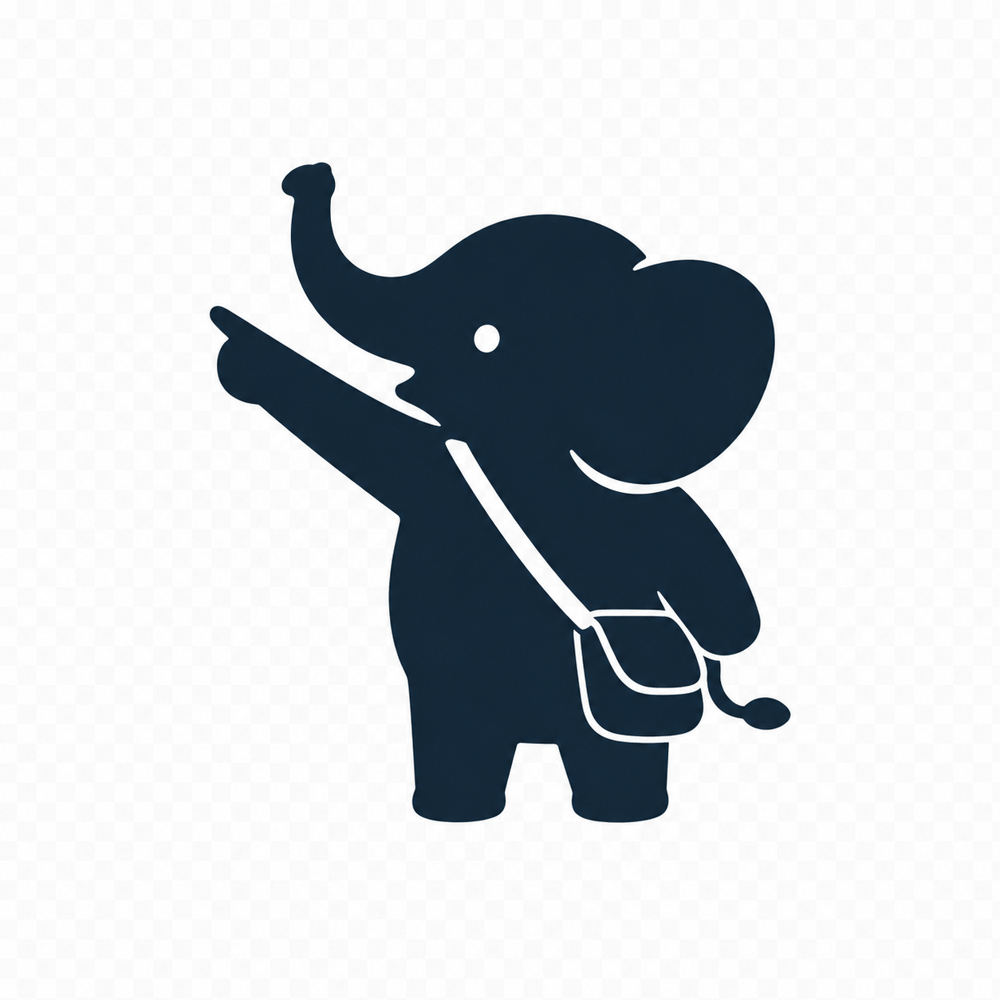

指さしタイ行き先を伝えるのも、食事の注文も
ショッピングも、体調不良のときも。
スマホの画面を見せるだけで現地の方に
伝えるフレーズを見せるだけ。
買い切り2,000円。
インストールしたその日から使えます。※1
タイ語の入力も、文法の心配も必要ありません。
地名を検索するか、「移動する」「レストランで注文する」「助けを求める」など、今いるシチュエーションをタップします。
一覧から伝えたい一言を選ぶだけで、自然なタイ語の文章が組み上がります。人数や時間、金額なども画面上で調整できます。
「相手に見せる」をタップすると、タイ語が画面いっぱいの大きな文字で表示されます。あとはスマホを相手に見せるだけです。
観光地・駅・空港・バスターミナルなど、タイ旅行で使う場所を幅広く収録。日本語はもちろん、Googleマップからコピーしたタイ語表記をそのまま貼り付けても見つかります。
バス・電車・鉄道・タクシー・トゥクトゥク・ソンテウ・ロットゥー・飛行機・船まで、乗車券の買い方や料金交渉まで。
「伝える」だけでなく「予約する」までサポート。バス・鉄道・現地ツアーは、そのまま予約ページに進めるリンク付きです。
定番タイ料理を写真付きで選び、辛さ・パクチー抜きなどの追加指示もその場で組み立てられます。
「頭が痛い」「熱がある」など、症状や欲しいものを画面で伝えられます。市販薬を写真付きで探すこともできます。
為替レートを設定しておけば、現地価格を円換算しながら確認・交渉できます。
一度読み込んでおけば、空港・地下・郊外など通信環境が不安定な場所でも問題なく使えます。
タイ語に「翻訳する」のではなく、すでに用意された自然な一言を「選んで見せる」だけです。
実は、翻訳アプリの精度だけが原因ではありません。日本語とタイ語は、そもそも翻訳との相性があまり良くない言語同士だと言われています。伝わる文章に仕上げるには、実は経験とコツが必要なのが実情です。
さらに厄介なのは、翻訳アプリを普段使い慣れていない人ほど、「本当にこの訳で伝わっているのか」を確かめるすべがなく、訳された文章をただ信じるしかないという点です。
指さしタイは、その「伝わるかどうか分からない不安」自体をなくすために作りました。翻訳アプリの代わりではなく、旅の心強いパートナーとして。
タイ旅行1回の安心料として、2,000円。指さしタイは、旅行のあいだだけ使う道具です。帰国後も払い続けるサブスクリプションは、この用途に合いません。一度購入すれば、その後の追加料金は一切かかりません。
一度の購入で、何度でも・何回の旅行でも使えます。
旅行が終わっても課金が続く、あるいは通信環境が無いと機能しないケースがあります。
シンプルな一つのプランだけです。